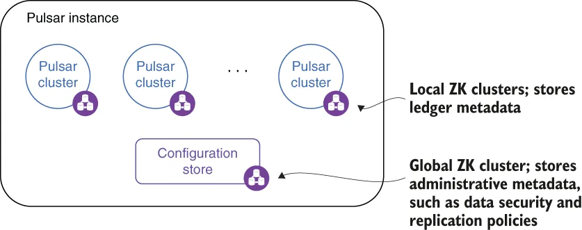

Other messaging systems consider the cluster the highest level from an administrative and deployment perspective, which necessitates managing and configuring each cluster as an independent system. Fortunately, Pulsar provides an even higher level of abstraction known as a Pulsar instance, which is comprised of one or more Pulsar clusters that act together as a single unit and can be administered from a single location, as shown in figure 2.1.
其他消息系统从管理和部署的角度把集群视为最高层级，这就要求把每个集群当作一个独立的系统来管理和配置。所幸的是，Pulsar 提供了一个更高层次的抽象，称为 Pulsar 实例：它由一个或多个 Pulsar 集群组成，这些集群作为一个整体协同工作，并且可以从单一位置进行管理，如图 2.1 所示。

Figure 2.1 A Pulsar instance can consist of multiple geographically dispersed clusters.
图 2.1 一个 Pulsar 实例可以由多个地理上分散的集群组成。
One of the biggest reasons for using a Pulsar instance is to enable geo-replication. In fact, only clusters within the same instance can be configured to replicate data amongst themselves.
使用 Pulsar 实例最重要的原因之一，就是为了启用跨地域复制。事实上，只有同一个实例内的集群之间才能被配置为相互复制数据。
A Pulsar instance employs an instance-wide ZooKeeper cluster called the configuration store to retain information that pertains to multiple clusters, such as geo-replication and tenant-level security policies. This allows you to define and manage these policies in a single location. In order to provide resiliency to the configuration store, each of the nodes within the Pulsar instance’s ZooKeeper ensemble should be deployed across multiple regions to ensure its availability in the event of a region failure.
Pulsar 实例使用一个实例级的 ZooKeeper 集群，称为配置存储（configuration store），用于保存与多个集群相关的信息，例如跨地域复制和租户级安全策略。这使你能够在一个地方定义和管理这些策略。为了让配置存储具备韧性，Pulsar 实例的 ZooKeeper 集群中的各个节点应当跨多个区域部署，以确保在某个区域发生故障时它仍然可用。
It is important to note that the availability of the ZooKeeper ensemble used by the Pulsar instance for the configuration store is required by the individual Pulsar clusters to operate even when geo-replication is enabled. When geo-replication is enabled, if the configuration store is down, messages published to the respective clusters will be buffered locally and forwarded to the other regions when the ensemble becomes operational again.
需要特别注意的是：即便启用了跨地域复制，各个 Pulsar 集群的正常运行仍然依赖于 Pulsar 实例用于配置存储的 ZooKeeper 集群的可用性。在启用跨地域复制的情况下，如果配置存储宕机，发布到各个集群的消息会在本地缓冲，并在该 ZooKeeper 集群恢复运行之后再转发到其他区域。
2.1.1 Pulsar 的分层架构
2.1.2 无状态服务层
2.1.3 流存储层
2.1.4 元数据存储